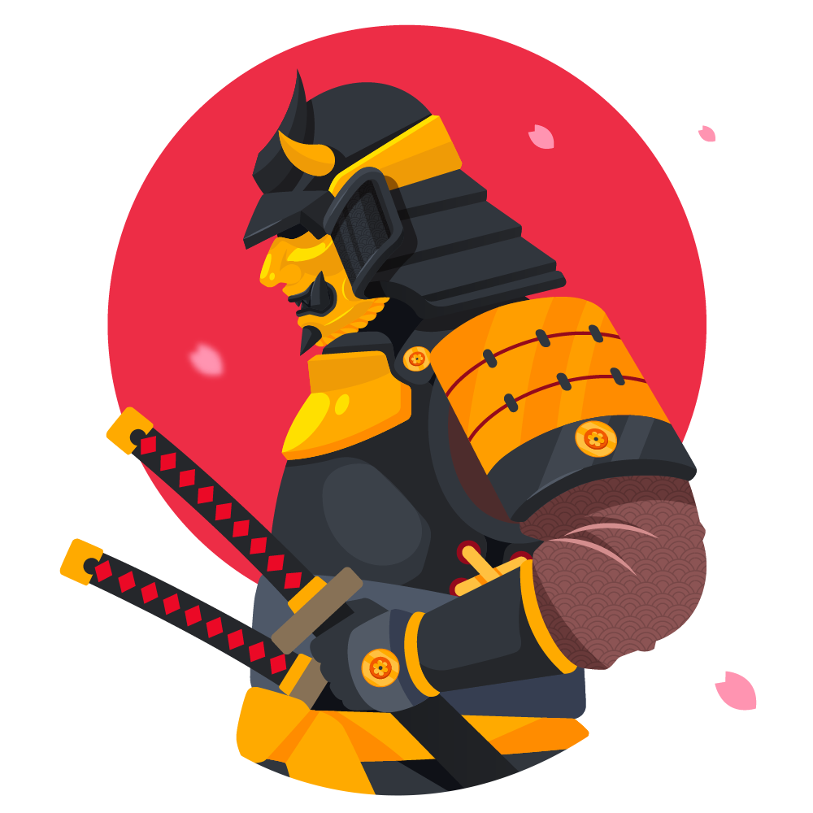

History
-
Asuka and Nara Period
Following the Battle of Hakusukinoe against Tang China and Silla in 663 AD, which led to a retreat from Korean affairs, Japan underwent widespread reform. One of the most important was that of the Taika Reform, issued by Prince Naka-no-Ōe (Emperor Tenji) in 646.
-
Heian period
In the early Heian period, during the late 8th and early 9th centuries, Emperor Kanmu sought to consolidate and expand his rule in northern Honshū and sent military campaigns against the Emishi, who resisted the governance of the Kyoto-based imperial court.
-
Sengoku period
The Sengoku jidai ("warring states period") was marked by the loosening of samurai culture, with people born into other social strata sometimes making a name for themselves as warriors and thus becoming de facto samurai.